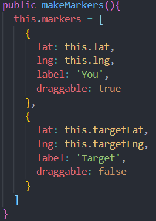

What: Bash script that automates tasks by running a single command
Why: Reduce time it takes to complete mundane tasks
How: Using using bash and a simple script file
At the beginning of a new day when opening up my PC to start working on homework, personal projects, playing games, or just experimenting and learning I am always doing the following things:
With this list comes some overhead and time. And I wouldn't be considered a programmer if I didn't spend hours trying to automate something that will save me a few minutes. But lets look at the big picture
Lets just say that each one of those tasks above takes about 5 seconds. This would mean that it accumulates to about 25+ minutes each morning on these tasks. I use, on average, my PC about 26 days a month which means I am spending around 11 minutes a month on these tasks. Even more so, I am spending just over 2 hours a year on these tasks. Seems like a pretty good reason to automate something if I do say so myself!
I am currently running Windows on my PC. I am aware that windows has Powershell (which I use fairly often) that allows admins to do admin stuff on the machine. I chose Bash because I noticed lots of companies are looking for developers who have some experience using bash shell. On top of this, Bash is open-source and has a large community and there isn't as steep of learning curve. So I had get Bash on my Windows machine which I did using THIS TUTORIAL.
Actually getting these tasks automated took a little more time than I was expecting. I had to figure out where the executables were for each task. It took many different tries to finally come up with something that worked. So here it is:
The final results are just as expected...AUTOMAZING! It take about 5 seconds for all of them to boot up and open (which would take me about the same time to open one!).
